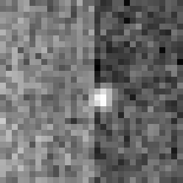
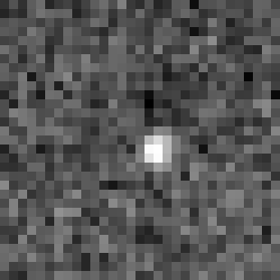

Green squares above and below the search area (outlined in yellow) indicate the pixels used to determine the average brightness of each column of pixels.
This describes the BB finding algorithm and precise measurement of the BB's location.
The first step is to determine the BB's approximate location within the EPID plane. This is done by restricting the search area to a square centered in the image. The size of the square is 2 x BBbyEPIDSearchDistance_mm, where BBbyEPIDSearchDistance_mm is a configuration value (currently set to 8 mm, so the search area is 16x16mm). The size of the square is smaller than the cube containing the BB, as shown by the yellow box below.
The reason for restricting the initial search area is:
The next step is to correct the image for differences in pixel amplification. When EPID images are captured, each column is processed by a different amplifier circuit. Small differences between amplifiers can make some columns brighter or darker than others.
To correct for differences in columnar amplification, the areas above and below the search area are taken as shown below. Each are the same size as the search area. Due to the design of the test, these ares will be flat (featureless), and provide good samples of average pixel intensity.
The mean value of each column of pixels in the green areas (both above and below the search area) is calculated. Next, the mean value of the dimmest column is selected. For each of the columns in the search area (in yellow), the value of each pixel is multiplied by:
$CompensationFactor = ColumnMeanValue / DimmestColumnMeanValue$
The result is to reduce the differences in columnar amplification.
|  |  |
Testing of this image processing waas performed on over 200 images from seven different treatment machines. Changes in pixel location were small and random, except in situations such as the one above, where there a significant bias in the image. In those cases the BB's position would change by approximately 0.5 mm.
The square is searched by constructing a template of pixels approximating the BB using its radius (configuration parameter EPIDBBPenumbra_mm). That template is checked at every position within the search area to determine which position yields the brightest set of pixels. That position is used as the coarse position of the BB.
To determine the BB's precise location, the center pixel of the coarse location is used as a starting point. Next, the brightest of all adjacent pixels (sharing an edge or corner) is selected and added to the BB. Again, the brightest pixel adjacent to the two BBs is found and added. This process is iterated, growing the BB until enough pixels have been found such that the sum of their area is the same as the area of the BB.
Note that this will usually yield more pixels than the template because it does not have the restriction of having to maintain geometric symmetry. One problem this approach addresses is that the BB has no clear edges, so instead it bases 'what is part of the BB" on the BB's size. The adjacency requirement also avoids selecting random single bright pixels that may be in the search area.
Finally the center of mass (which includes the pixels' location and brightness) of the BB's pixels is calculated in X and Y to determine the BB's precise location.
Given the small number of pixels composing the BB, and the image's noisiness, it is possible that image noise in the form of a few bright pixels could look like a BB and fool the algorithm.
To guard against this, the BB must be significantly brighter than the surrounding pixels. To determine this, the standard deviation and mean of the pixels in the search area that are not included by the BB is calculated. A BB standard deviation multiple is calculated by:
$SearchArea_{mean}$ : Mean value of pixels inside the search area but not part of the BB.
$BB_{mean}$ : Mean value of BB's pixels (shown in green)
$SearchArea_{StandardDeviation}$ : Standard deviation of pixels in search area but not part of BB
$$RelativeBBBrightness = absoluteValueOf(BB_{mean} - SearchArea_{mean}) / SearchArea_{StandardDeviation} $$
Note: For pixels to qualify as background, they must be far enough away from the precise center of the BB. The distance used is three times the BB's radius (Configuration parameter: EPIDBBPenumbra_mm.)
If $RelativeBBBrightness$ is larger than the configuration parameter EPIDBBMinimumStandardDeviation, then the BB is considered valid. The value of this configuration parameter was chosen by observing the value from a variety of EPID images.
This link will show the metadata for the DICOM image, as well as some statistics regarding the image. A partial screenshot is shown below of image diagnostics values. These values are generally only used when diagnosing a problem with image processing.
While this test is sufficient to validate Daily QA OBI, it should be noted that because the BB is small, it's location is based on a very few pixels. Also, because that EPID images are taken at a low energy, the images tend to be noisier. The implication is that there are limits to how accurately the BB may be located.
{kind=link}
{kind=link}
{kind=link}
{kind=link}
{kind=link}